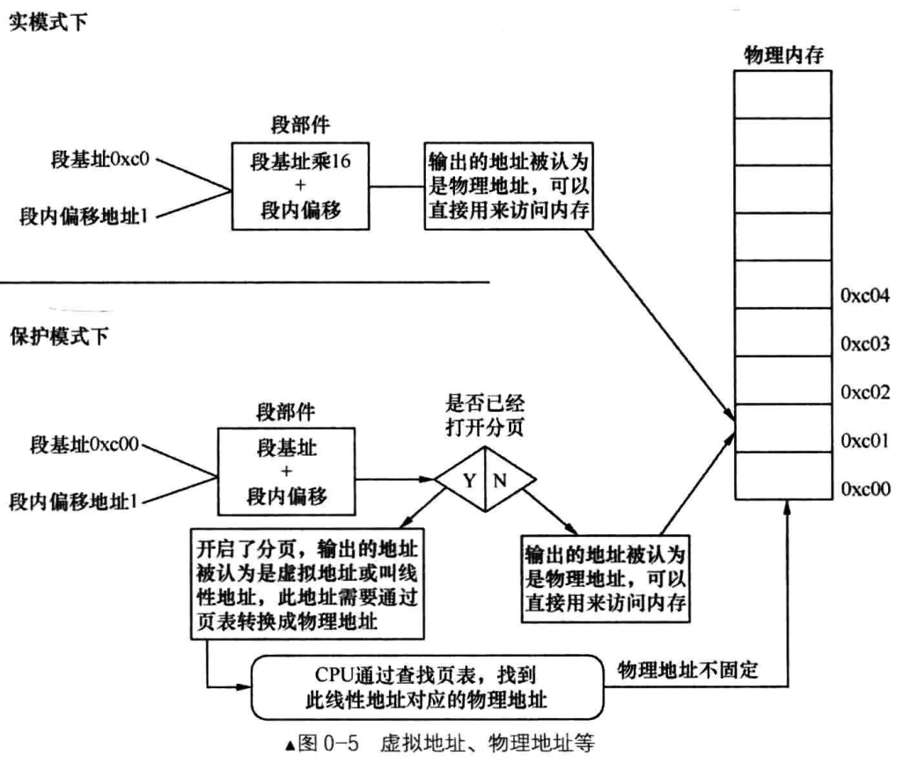
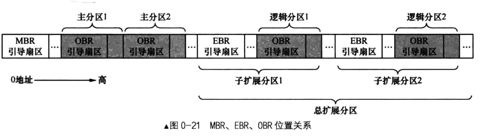

访问外部硬件的两个方式
- 将某个外设的内存映射到一定范围的地址空间中，CPU通过地址总线访问该内存区域时会落到外设的内存中。例如显卡，CPU不与显示器直接交互，只与显卡通信，显卡上有片内存叫显存，被映射到主机物理内存上，CPU访问这片内存就是访问显存。
- CPU通过IO接口访问外设，IO接口将信息传递给另一端的外设，CPU从来不知道有这些设备的存在。
CPU如何访问IO接口
IO接口上有寄存器，访问IO接口本质上就是访问寄存器（端口）。
用户态与内核态
用户态（特权3级）和内核态（也称管态，特权0级）是对CPU来讲的。用户进程陷入内核态是指由于内部或外部中断发生，当前进程被暂停终止执行，其上下文被内核的中断程序保存起来，开始执行一段内核的代码。（不是用户程序在内核的代码，用户代码不可能在内核中）。
内存访问为什么要分段
首先是为了程序重定位，其次是将大内存分为可以访问的小内存，通过这种方法就能访问到所有内存。
代码中为什么分为数据段与代码段
- 可以为它们赋予不同的属性：数据段可写，代码段只读等
- 为了提高CPU内部缓存的命中率，有利于增强程序的局部性
- 节省内存，程序的多个副本执行，只需要将只读的代码段共享即可，不需要多个相同的代码段
全局描述符表（GDT：Global Descriptor Table）
表中的每一项成为段描述符，其中包含段的属性位（一个是S–1bit，另外一个是TYPE–4bit），可以指定段的位置，大小及属性
物理地址/逻辑地址/有效地址/线性地址/虚拟地址 P11
- 物理地址就是物理内存中真正的地址
- “段基址+段内偏移地址“在实模式下是物理地址，在保护模式下是线性地址（此时段基址是选择子，通过GDT找到真正的段基址），若保护模式下没有开启分页功能，则该线性地址可以当物理地址用，若开启了，则可以称为虚拟地址（虚拟地址与线性地址在分页机制下是一回事，都不是真正的内存地址）
- 段内偏移地址被称为有效地址或逻辑地址

平坦模型
平坦模型是对于多段模型来说的，指的是一个段。例如在实模式下内存是20位（1MB），但是只能访问16位，所以只能通过多个段来访问内存，而对于保护模式下的32位，4GB的内存，段内偏移地址也是地址，一个段就能访问。
段寄存器（Segment register)
- CS 代码段寄存器 Code Seg Reg：代码段的段基值
- DS 数据段寄存器 Data Seg Reg：数据段的段基值
- ES/FS/GS 附加段寄存器 Extra Seg Reg：附加数据段的段基值
- SS 堆栈段寄存器 Stack Seg Reg：堆栈段的段值
在16位的实模式下，CS/DS/ES/SS的值是段基址，是具体的物理地址，内存单元的逻辑地址为”段基址：段内偏移量”。在32位的保护模式下，装入段寄存器的不再是段地址，而是16位宽度的段选择子，所以段寄存器都是16位的。
堆与栈
堆是程序运行中用于动态内存分配的内存空间，是操作系统为每个用户进程规划的，属于软件范畴。
栈是处理器运行必备的内存空间，是硬件必须的，又由软件提供。
堆是堆；堆栈是栈，与堆无关。堆与栈的地址空间相接，栈从高地址向低地址发展，堆从低地址向高地址发展
大端字节序/小端字节序
- 小端字节序是数值的低字节放在内存的低地址处，数值的高字节放在内存的高地址处
- 大端字节序是数值的低字节放在内存的高地址处，数值的高字节放在内存的低地址处
例如：0x12345678 小端字节序：0x78 0x56 0x34 0x12 大端字节序：0x12 0x34 0x56 0x78
中断向量表（Interrupt Vector Table, IVT)
实模式下的BIOS/DOS通过软中断指令 int 中断号来调用的，IVT中的每个中断向量是4字节，IVT长度1024字节，IVT中的中断例程由BIOS添加。
BIOS中断调用的主要功能是提供了硬件访问的方法，若在某一块内存区域扫描到了硬件，就填写IVT相关项，使之指向硬件自带的例程。IVT中的第0H-1FH是BIOS中断，0x20-0x27是DOS中断（只占用0x21），DOS中断可以调用BIOS中断。
中断描述符表（Interrupt Descriptor Table, IDT）
linux内核在进入保护模式下才建立中断例程，即Linux中断
MBR/EBR/DBR/OBR P41
计算机接电之后运行BIOS，进行一些简单的初始化检测/工作后，将处理器控制权交给MBR（主引导记录：Main Boot Record），MBR位于硬盘最开始的扇区（被称为MBR引导扇区），扇区有64字节大小的分区表（4个分区）里面有次引导程序地址。MBR后面的扇区称为主分区1/主分区2…
在某个分区里有操作系统，这个分区就是活动分区，MBR知道活动分区有操作系统，每个分区首项最开始的1字节的值只有0x80（活动分区）与0（非活动分区），找到活动分区将控制权交给此分区上的引导程序，通常是内核加载器，其入口在各分区最开始的扇区，”各分区起始的扇区”存放的是操作系统引导记录OBR（OS Boot Record），此扇区也被成为OBR引导扇区，OBR扇区的前3个字节存放了跳转指令。
DBR是DOS Boot Record，只有4个分区。
EBR是Expand Boot Record（扩展分区），为了解决分区数量限制提出的，位于各子扩展分区中最开始的扇区，其余扇区合成位逻辑分区1/逻辑分区2。
整个硬盘只有一个MBR，可以有无数个EBR。扇区以0x55和0xaa结束，且分区表只在MBR/EBR中，OBR/DBR中没有分区表.
